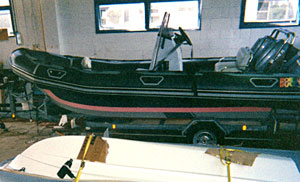
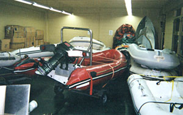
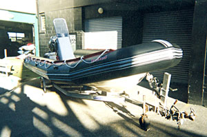

Servicing
The rest of the boat, and the trailer under it.
This is the part that makes us different from every other tube shop in Auckland. The boat arrives on its trailer and leaves finished — motor serviced, electronics working, warrant sorted.
Outboards
Servicing
We service most outboard brands. This is workshop-only work — bring the boat and motor in, or have them collected.
If the boat is already here for tubes or hull work, the motor service costs you no extra downtime at all. It is the single easiest saving on this site.

Marine electronics
Installation and fault-finding
GPS, fish finders, VHF, radar and stereo — specified, installed and wired properly, on a boat where a bad install means water in the loom within a season.
We also trouble-shoot most marine electrical problems. Intermittent faults, flat batteries that shouldn't be flat, gear that works on the trailer and dies on the water.

Trailers
Repairs and warrant of fitness
Light boards, brakes, structural damage, alterations and rust prevention — plus a warrant of fitness, done here at the workshop.
A boat trailer lives its life being reversed into salt water. It is the part of the rig most likely to fail a warrant and the part owners think about least. If the boat is in with us, the trailer should go through at the same time.

Getting the boat here
Or us to the boat
Collection and delivery. If getting the boat to Glenfield is the problem, say so when you call. We collect and deliver, including to marinas.
Mobile service. For larger non-trailerable RIBs we come to the boat. Tell us where it is berthed and what the access is like.
One booking, one boat, one invoice
Tubes, hull, motor, electronics and trailer in a single visit. Tell us everything that's wrong with it — including the things you've been putting off.